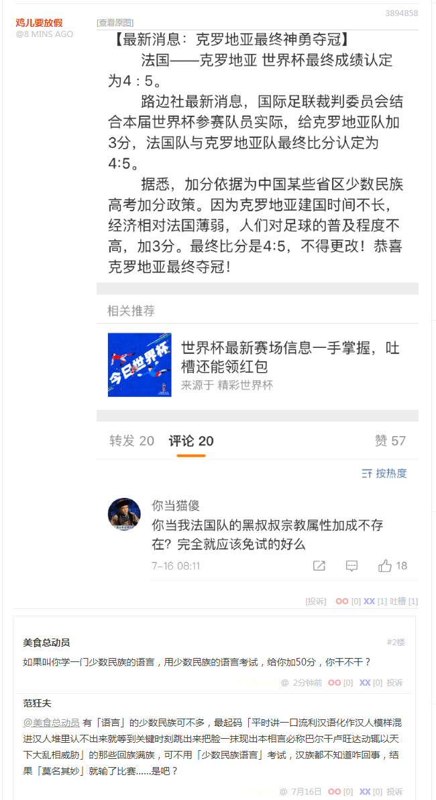
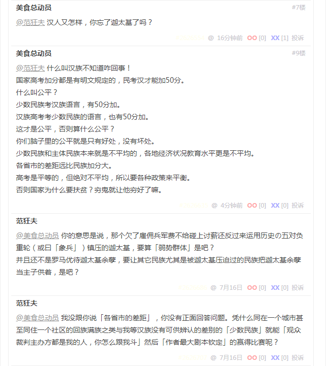
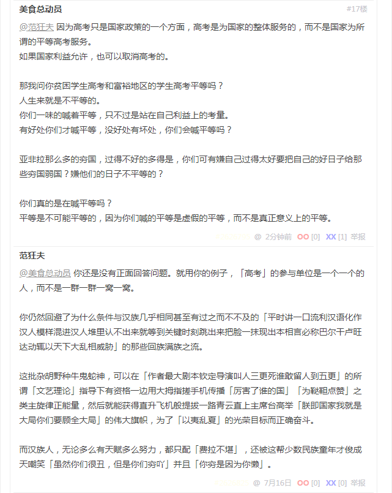

回复
应景，九省通衢の煎蛋果然原地满血复活了也。



体育与政治
如果叫你学一门少数民族的语言，用少数民族的语言考试，给你加50分，你干不干？
有「语言」的少数民族可不多，最起码「平时讲一口流利汉语化作汉人模样混进汉人堆里认不出来就等到关键时刻跳出来把脸一抹现出本相言必称巴尔干卢旺达动辄以天下大乱相威胁」的那些回族满族，可不用「少数民族语言」考试，汉族都不知道咋回事，结果「莫名其妙」就输了比赛……是吧？
汉人又怎样，你忘了迦太基了吗？
你的意思是说，那个欠了雇佣兵军费不给碰上讨薪还反过来运用历史の五对负重轮（或曰「象兵」）镇压的迦太基，要算「弱势群体」是吧？
并且还不是罗马优待迦太基余孽，要让其它民族尤其是被迦太基压迫过的民族把迦太基余孽当主子供着，是吧？
什么叫汉族不知道咋回事！ 国家高考加分都是有明文规定的，民考汉才能加50分。 什么叫公平？ 少数民族考汉族语言，有50分加。 汉族高考考少数民族的语言，也有50分加。 这才是公平，否则算什么公平？ 你们脑子里的公平就是只有好处，没有坏处。
少数民族和主体民族本来就是不平均的，各地经济状况教育水平更是不平均。 各省市的差距远比民族加分大。 高考是平等的，但绝对不平均，所以要各种政策来平衡。 否则国家为什么要扶贫？穷鬼就让他穷好了嘛。
我没跟你说「各省市的差距」，你没有正面回答问题。凭什么同在一个城市甚至同住一个社区的回族满族之类与我等汉族没有可供辨认的差别的「少数民族」就能「观众裁判主办方都是我的人，你怎么跟我斗」然后「作者最大剧本钦定」的赢得比赛呢？
因为高考只是国家政策的一个方面，高考是为国家的整体服务的，而不是国家为所谓的平等高考服务。 如果国家利益允许，也可以取消高考的。
那我问你贫困学生高考和富裕地区的学生高考平等吗？ 人生来就是不平等的。 你们一味的喊着平等，只不过是站在自己利益上的考量。 有好处你们才喊平等，没好处有坏处，你们会喊平等吗？
亚非拉那么多的穷国，过得不好的多得是，你们可有嫌自己过得太好要把自己的好日子给那些穷国弱国？嫌他们的日子不平等的？
你们真的是在喊平等吗？ 平等是不可能平等的，因为你们喊的平等是虚假的平等，而不是真正意义上的平等。
你还是没有正面回答问题。就用你的例子，「高考」的参与单位是一个一个的人，而不是一群一群一窝一窝。
你仍然回避了为什么条件与汉族几乎相同甚至有过之而不不及的「平时讲一口流利汉语化作汉人模样混进汉人堆里认不出来就等到关键时刻跳出来把脸一抹现出本相言必称巴尔干卢旺达动辄以天下大乱相威胁」的那些回族满族之流。
这批杂胡野种牛鬼蛇神，可以在「作者最大剧本钦定导演叫人三更死谁敢留人到五更」的所谓「文艺理论」指导下有资格一边用大拇指搓手机传播「厉害了谁的国」「为鞑靼点赞」之类主旋律正能量，然后就能获得直升飞机般提拔一路青云直上主席台高举「朕即国家我就是大局你们要顾全大局」的伟大旗帜，为了「以夷乱夏」的光荣目标而正确奋斗。
而汉族人，无论多么有天赋多么努力，都只配「费拉不堪」，还被这帮少数民族童年才俊成天嘲笑「虽然你们很丑，但是你们穷吖」并且「你穷是因为你懒」。
前天和昨天我说什么来着？本来就是九省通衢の煎蛋的活跃色目帐号主动把体育与政治扯到一起，它们胡说八道随便刷屏没关系，其它人民群众尤其是汉族网友参与讨论，立刻就以「政治敏感」理由「亦当删去」。真乃「只许州官放火不许百姓点灯」之兲朝特色「依法治国」者也。
这盛世，如尔等所愿。
@乐正西，你还有兴趣继续探讨九省通衢の煎蛋的活跃色目帐号言行举止吃喝拉撒睡当中的微言大义么？